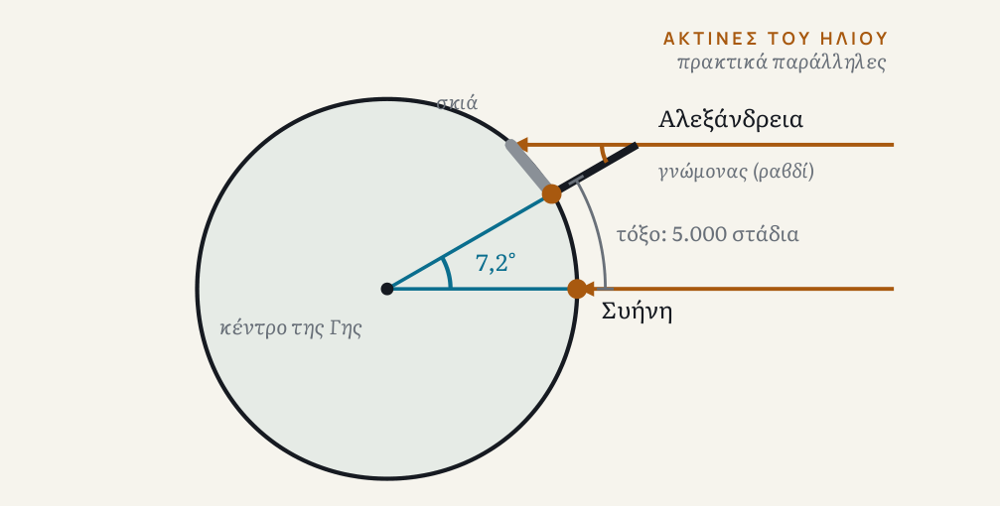

Ο Ερατοσθένης ήθελε να φτιάξει έναν χάρτη ολόκληρου του γνωστού κόσμου. Για να το κάνει έπρεπε να ξέρει πόσο μεγάλος είναι ο κόσμος, και προφανώς δεν μπορούσε να τον περπατήσει από άκρη σε άκρη. Το έργο στο οποίο περιέγραψε τη μέτρησή του δεν σώζεται· ό,τι ξέρουμε προέρχεται από μεταγενέστερους συγγραφείς, κυρίως από μια απλοποιημένη εκδοχή του Κλεομήδη, που ήθελε να διδάξει τη μέθοδο σε ευρύτερο κοινό. Ας ακολουθήσουμε την αφήγησή του.
Δύο πόλεις, ένα φως
Στη Συήνη (τη σημερινή Ασουάν), το μεσημέρι του θερινού ηλιοστασίου, ο Ήλιος βρισκόταν, σύμφωνα με την απλοποιημένη αφήγηση, ακριβώς πάνω από τα κεφάλια των κατοίκων: τα κατακόρυφα αντικείμενα δεν έριχναν σκιά. Την ίδια στιγμή, στην Αλεξάνδρεια, βορειότερα, ένας γνώμονας, ένα κατακόρυφο ραβδί, έριχνε σκιά. Από το μήκος του ραβδιού και της σκιάς του υπολογίζεται η γωνία των ακτίνων: περίπου το ένα πεντηκοστό του κύκλου, δηλαδή 7,2 μοίρες.

Αν οι ακτίνες του Ήλιου φτάνουν παράλληλες και η Γη είναι σφαίρα, η γωνία της σκιάς είναι ίση με τη γωνία ανάμεσα στις δύο πόλεις, όπως φαίνονται από το κέντρο της Γης. Αν λοιπόν η απόσταση Αλεξάνδρειας–Συήνης αντιστοιχεί στο ένα πεντηκοστό του κύκλου, η περιφέρεια της Γης είναι πενήντα φορές μεγαλύτερη. Η απόσταση, όπως την είχαν μετρήσει οι επίσημοι βηματιστές, ήταν 5.000 στάδια. Το αποτέλεσμα: 250.000 στάδια, ή 252.000 σύμφωνα με άλλους αρχαίους συγγραφείς.
Αξίζει να σταθείς στην απόσταση των 5.000 σταδίων. Οι βηματιστές δούλευαν για το κράτος και μετρούσαν την Αίγυπτο για γεωργικούς και φορολογικούς σκοπούς. Η μέτρηση της Γης στηρίχθηκε, με άλλα λόγια, σε μετρήσεις που είχαν γίνει για τη φορολογία.
Η μέθοδος χρειάζεται μια γωνία, μια απόσταση και δύο υποθέσεις: ότι η Γη είναι σφαίρα και ότι οι ακτίνες του Ήλιου φτάνουν πρακτικά παράλληλες. Και οι δύο ισχύουν με πολύ καλή προσέγγιση, όχι ακριβώς. Η Γη διαφέρει από τέλεια σφαίρα κατά περίπου 0,3%.
Πόσο σωστός ήταν;
Συχνά ακούς ότι ο Ερατοσθένης έπεσε έξω κατά λιγότερο από 1%. Η αλήθεια είναι πιο ενδιαφέρουσα. Σήμερα ξέρουμε ότι η Γη είναι λίγο πεπλατυσμένη: η περιφέρειά της είναι περίπου 40.075 χιλιόμετρα στον ισημερινό και περίπου 40.008 μέσω των πόλων. Ο Ερατοσθένης μέτρησε έναν μεσημβρινό, γι' αυτό συγκρίνουμε με τη δεύτερη τιμή. Για να μετατρέψεις τα 252.000 στάδια σε χιλιόμετρα χρειάζεσαι το μήκος του σταδίου, και αυτό δεν το ξέρουμε με βεβαιότητα.
Το στάδιο δεν είχε παντού την ίδια τιμή: για το «ολυμπιακό» προτείνονται περίπου 176 μέτρα, για το «ιταλικό» περίπου 185, ενώ για τη μονάδα που ίσως χρησιμοποίησε ο Ερατοσθένης έχουν προταθεί και περίπου 157,5. Με 157,5 μέτρα το αποτέλεσμα βγαίνει περίπου 39.700 χιλιόμετρα, σχεδόν σωστό. Με 185 μέτρα βγαίνει περίπου 46.600, δηλαδή περίπου 16,5% μεγαλύτερο. Ανάλογα με το στάδιο, οι εκτιμήσεις κινούνται από περίπου 38.600 έως 46.700 χιλιόμετρα. Το μέγεθος πάντως είναι το σωστό μέγεθος: ο Ερατοσθένης βρήκε έναν κόσμο της τάξης των σαράντα χιλιάδων χιλιομέτρων, όχι τεσσάρων ή τετρακοσίων χιλιάδων.
Υπάρχει και μια λεπτομέρεια για τους λάτρεις των αριθμών: το 252.000 διαιρείται ακριβώς με όλους τους ακέραιους από το 1 έως το 10. Ορισμένοι ιστορικοί πιστεύουν ότι ο Ερατοσθένης άλλαξε τα 250.000 σε 252.000 ακριβώς γι' αυτόν τον λόγο· άλλοι διαφωνούν.
Η ίδια ιδέα δεν έδινε πάντα καλά αποτελέσματα. Σύμφωνα με τον Κλεομήδη, ο Ποσειδώνιος επανέλαβε τη μέτρηση με το αστέρι Κάνωπο: στη Ρόδο μόλις που άγγιζε τον ορίζοντα, στην Αλεξάνδρεια ανέβαινε ως τις 7,5 μοίρες. Η πραγματική διαφορά γεωγραφικού πλάτους των δύο πόλεων είναι περίπου 5 μοίρες και 14 λεπτά. Η μέθοδος ήταν παρόμοια· το αποτέλεσμα εξαρτιόταν από τα δεδομένα και τις υποθέσεις που τη συνόδευαν. Όταν πάντως η μέθοδος τροφοδοτείται με σύγχρονα δεδομένα, στέκει: μια επανάληψη του υπολογισμού το 2012 έδωσε 40.074 χιλιόμετρα, με διαφορά 0,16% από την τιμή μέσω των πόλων.
Οι περιορισμοί είναι γνωστοί: οι δύο πόλεις δεν βρίσκονται στον ίδιο μεσημβρινό, η Συήνη δεν βρίσκεται ακριβώς πάνω στον Τροπικό του Καρκίνου και η απόσταση των 5.000 σταδίων είναι προσεγγιστική. Επειδή η μονάδα μέτρησης είναι αβέβαιη, η Britannica σημειώνει ότι και η ακρίβεια του αποτελέσματος παραμένει αβέβαιη.
Από το τοπικό στο καθολικό
Το σημαντικότερο δεν είναι ο αριθμός. Είναι το είδος της συλλογιστικής. Όλο αυτό έγινε τον 3ο αιώνα π.Χ., πριν υπάρξουν τηλεσκόπια, ρολόγια ακριβείας ή δορυφόροι. Ο Ερατοσθένης δεν επισκέφθηκε ολόκληρη τη Γη και δεν την κοίταξε απ' έξω. Στάθηκε σε δύο σημεία, μέτρησε μια γωνία και συμπέρανε ένα μέγεθος που ξεπερνά κατά πολύ την εμπειρία οποιουδήποτε ανθρώπου της εποχής του.
Δεν χρειάστηκε να βγει από τον κόσμο για να τον μετρήσει. Χρειάστηκε δύο «εδώ» και μια υπόθεση για το σχήμα του συνόλου.
Αυτό το σχήμα επαναλαμβάνεται σε ολόκληρη την επιστήμη. Δεν βλέπουμε το σύμπαν απ' έξω. Το μετράμε από τοπικά σημεία, τον δικό μας πλανήτη, το δικό μας ηλιακό σύστημα, τον δικό μας γαλαξία, και συνδέουμε τα αποτελέσματα με μια θεωρία για το σύνολο. Όταν η θεωρία στέκει, η μέθοδος αποδίδει κάτι σπουδαίο. Όταν όχι, το λάθος κρύβεται ακριβώς εκεί που δεν κοιτάμε: στην υπόθεση.
Το «εδώ» δεν είναι απλώς μια θέση. Είναι μια σχέση: ξέρεις πού βρίσκεσαι όταν μπορείς να το συγκρίνεις με ένα άλλο «εδώ» και με μια υπόθεση για το σύνολο. Ο Ερατοσθένης δείχνει ότι η γνώση του συνόλου μπορεί να προκύψει από το τοπικό, με έναν όρο: να είμαστε ειλικρινείς για το ποιες υποθέσεις τη στηρίζουν.
Και μια ερώτηση που θα μας συνοδεύει σε όλο το τεύχος: όσα ξέρουμε για το σύμπαν, πόσα από αυτά προκύπτουν όπως εδώ, από λίγες τοπικές μετρήσεις και μια υπόθεση για το σχήμα του συνόλου;
Πηγές και περαιτέρω ανάγνωση
- Encyclopaedia Britannica, «Eratosthenes»
- American Physical Society, APS News, «Eratosthenes Measures Earth» (2006)
- Nature, «Eratosthenes and the Circumference of the Earth» (Nature 152, 473)
- Wikipedia, «Earth's circumference» (για τις εκτιμήσεις του σταδίου και τον Κλεομήδη, με παραπομπές στη βιβλιογραφία)